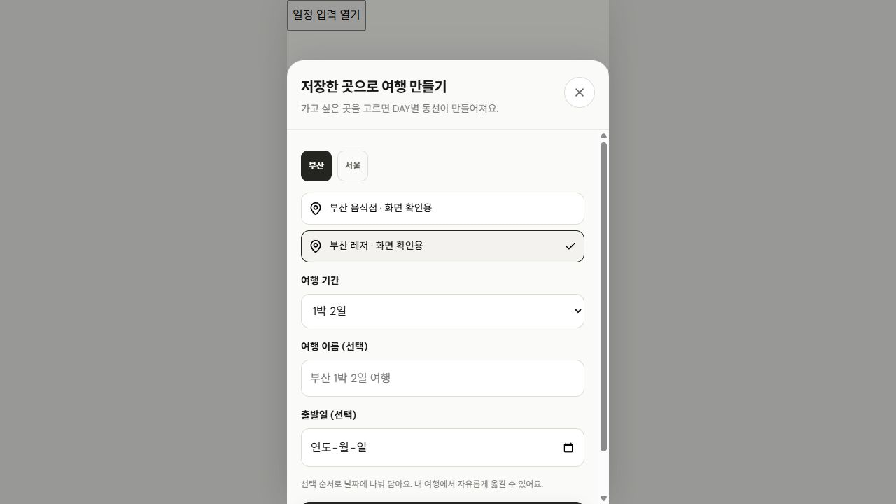
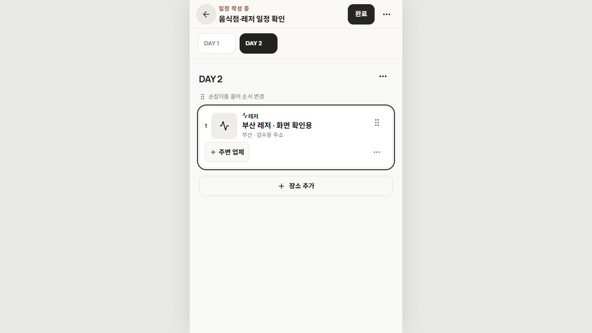
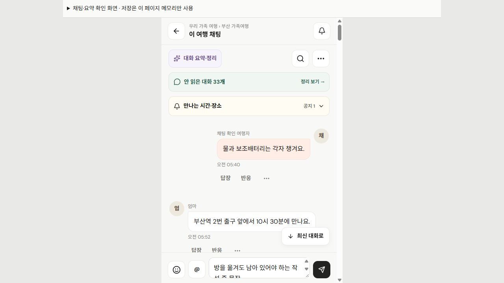
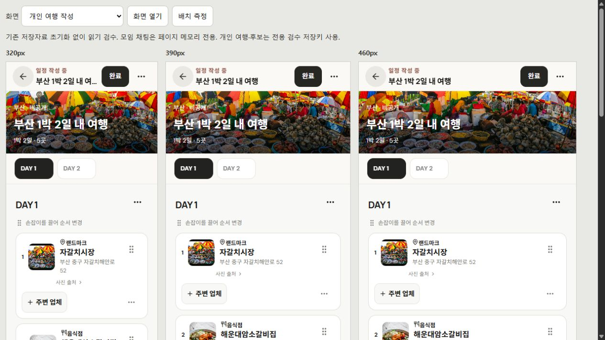

SPOTLOG · 최종 화면 검수
고객·관리자 화면, 무엇을 고쳤나
저장 장소 중심의 구성과 모임·여행 구분 유지. 장소 선택 초안·채팅 초안 보존을 보완하고, 자주 누르는 작성·탐색 버튼을 크게 조정.
수정 완료
| 항목 | 발견 당시 | 현재 반영 |
|---|---|---|
| 여행 생성 장소 선택 | 현재 지역을 다시 누르면 해제한 장소까지 전체 선택 | 완료같은 지역 재클릭은 선택 유지. 지역 왕복도 현재 시트 안에서 지역별 선택 기억. 기존 활성 초안 저장 유지. |
| 레저 종류 | 개인 여행에서 레저가 랜드마크로 표시 | 완료공통 종류 라벨 사용. 레저 표시 수정. 장소 kind·ID·여행 방문은 유지. |
| 채팅 작성 초안 | 방을 옮겼다 돌아오면 미전송 내용 소실 | 완료본문·스티커·인용 ID를 계정·모임·방별 페이지 메모리에 보관. 성공 전송만 지우기, 실패 시 유지, 권한 회수 시 해당 초안 제거. |
| 대화 정리 진입 | 일반 진입과 실제 원문 기능의 이름이 다르게 느껴짐 | 완료일반 요약 진입을 ‘대화 요약·정리’로 통일. 실제 원문 모아보기와 별도 AI 예시의 구분 유지. |
| 여행 작성·진행 | 길찾기·주변 업체·저장 DAY 조작 등 일부 36px·12px | 완료이번에 보완한 작성·진행·길찾기·주변 업체·저장 DAY의 주요 버튼 44px 이상, 조작 글자 14px. |
| 여행기·관심 장소 | 필터·카드·헤더 일부 조작이 작음 | 완료여행기 필터와 관심 카드 조작 44px·14px, 검색 입력 16px. 고객 헤더 조작 44px. |
| 관리자 작은 화면 | 작은 버튼과 긴 탭이 좁은 폭에서 빽빽함 | 완료모바일 주요 버튼 44px. 탭 간격 8px, 긴 탭은 해당 줄 안에서 가로 스크롤. |
| 관리자 장소 상세 진입 | 목록을 내린 뒤 장소를 열면 상세도 아래부터 보여 제목·탭을 놓침 | 완료새 장소의 상세는 시작 부분 표시. 검색어·목록 위치는 복귀 시 보존. 같은 장소의 입력·탭 변경으로 강제 이동하지 않음. |
기존 고객 자료와 관리자 원본은 변경하지 않음. 공개 콘텐츠는 읽기 확인, 입력·전환 검수는 분리된 메모리 fixture 사용. 저장 장소·여행·여행기를 자동 초기화하거나 방문을 임의로 줄이는 변경 없음.
모든 버튼을 44px로 바꿨다는 의미는 아님. 사진 출처 28px·11px, 일부 보조 신고 36px·12px 등 기존 컴팩트 역할은 이번 변경에 포함하지 않음. 위 표의 주요 작성·탐색 조작을 대상으로 보완.
채팅 초안은 현재 페이지 메모리 보관. 다른 섹션을 다녀와도 같은 계정의 해당 방에서 복원. 새로고침 보존이나 모든 화면에서 로그아웃 즉시 파기까지 보장하는 기능은 아님.
화면·자동 검사 결과
- 브라우저 90상태: 고객 69 + 관리자 21. 페이지 가로 넘침 0. 정상 렌더된 이미지 오류 0. 후보 비교의 의도적인 missing 이미지 대체 동작은 별도 구분.
- 고객 후속 확인: 지역 재클릭·지역 왕복 선택 유지, 레저 종류, 채팅 방 이동·섹션 복귀 초안, 수정한 버튼·필터 크기 확인.
- 관리자 후속 확인: 7개 메뉴의 데스크톱·태블릿·모바일 배치, 긴 탭 내부 스크롤, 작은 화면의 주요 조작 확인. 검색 ‘해’의 목록 스크롤 923px → 상세 시작 8px → 사진 탭 전환 → 목록 복귀 923px 및 검색어 유지.
- 자동 전체 검사: 수정 후 77개 파일·681개 통과. 실패·건너뜀·취소 0. 기존 672개와 새 채팅 초안 9개 모두 포함.
- 타입 검사: 웹·네이티브 TypeScript 통과. 실제 휴대폰 설치·키보드 검수와는 별도.
- 기본 흐름: 로그인·회원가입 5개 방식 분리, 이메일 입력 16px·단일 화면, 타인 댓글·답글과 신고 대상, 11종 오류 안내·복귀 확인. 신고·회원가입·외부 메시지 전송 없음.
- 스크롤·키보드: 관심 장소의 스크롤 아래·위에서 하단 메뉴 top 646px / bottom 720px 유지. 전체 메뉴 Escape 닫기 후 원래 버튼으로 포커스 복귀.
최종 검증 완료: 전체 자동 검사 681 / 681, 웹 production 빌드와 네이티브 타입 검사 통과. 실제 서비스 연동·실기기 검수 완료와는 구분.
최종 681개 검사 로그 · 최종 웹 빌드 · 최종 네이티브 타입 · 11종 오류 화면 · 관리자 상세·복귀 실측








이미지를 누르면 원본 확인. 추가 화면: 여행기 · 관심 장소.


상세 검사 원문
기준 전체 검사 로그 · 추가 채팅 초안 검사 9개 · 웹 타입 · 네이티브 타입 · 관리자 1440px · 관리자 768px · 관리자 390px.
제안 후속 반영과 남은 기능
| 상태 | 항목 | 체감 효과·보호 기준 |
|---|---|---|
| 로컬 반영 | 저장 목록 이름·주소 검색 | 현재 목록·지역·종류 안에서 접이 검색. 목록·지도 같은 결과, 검색 지우기는 기존 필터 유지. 저장 자료·여행 초안 변경 없음. |
| 로컬 반영 | 특정 정모의 맥락 유지 | 공개 정모 카드 → 가입 신청 → 승인 후 원래 정모로 복귀. 선택 목적지 재검사. 가입 승인과 정모 참석은 별도 선택. |
| 로컬 반영 | 비밀번호 보기·숨기기 | 이메일 로그인·가입·확인 3칸에 독립 보기. 값·자동완성 유지, 화면·계정 경계·잠금·재진입 시 재가림. |
| P2 · 서버 연결 후 | 마감 정모 대기 신청 | 현재 정원 초과 시 ‘미정 또는 문의’ 안내에서 확장. 대기 순서·취소 자리 알림 제공. 모임 가입과 정모 참석은 분리하고, 알림을 받았다고 자동 참석으로 확정하지 않기. |
제안 1~3번은 사용자 승인 후 로컬 반영. 후속 최종 검사 78개 파일·695개, 웹 빌드·네이티브 타입 통과. 320·390·460px의 후속 12상태 가로 넘침 0. 후속 동작·화면·검사 근거에서 확인. 이 보고서의 앞선 90상태·681개 수치는 당시 검수 기록으로 유지. 기존 가입 승인·정모 참석·공동 관심 장소·오프라인 저장·답장·반응은 이미 있는 기능으로 유지.
유지한 기준과 아직 확인하지 않은 범위
유지 · 저장 장소 우선, 장소별 종류 보존, 모임 전체/하위 일정 채팅, 일반 정모의 동선 비필수, 개인 여행과 여행기 분리, 예약 고정과 후보 검수. 자동 일정 삭제·방문 감소 없음.
별도 연결·검수 · 실제 AI/LLM·회원 인증·메일/OAuth·실시간 채팅·푸시 서버는 미연결. 이번 원문 모아보기는 실제 AI 호출이 아니며 AI 예시는 별도. 실기기 키보드와 오프라인의 새 실측도 이번에는 실행하지 않음.
추가 조사 항목 · 너비별 검수 iframe을 교체·새로고침하는 중 MutationObserver.observe 대상 오류 2건 기록. 같은 동선의 단독 앱 탭에서는 재현되지 않음. 제품 소스에 해당 Observer 사용은 없지만 원인은 확정하지 않았으며, 모든 브라우저 오류가 0이었다고 판정하지 않음. 범위별 원본 로그.
발견 당시 감사 초안은 product-review.md에 그대로 보존. 해당 초안의 P1 발견을 현재 미수정 상태로 오해하지 않도록 이 최종 보고서의 완료 표와 구분.